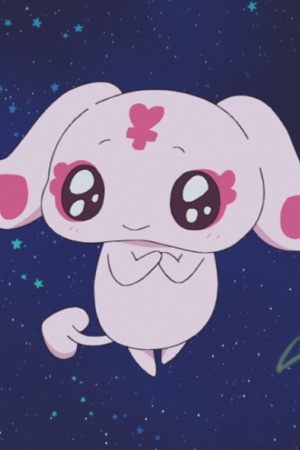

| |
Claus |
|
Claus is a girl who lives in a small village that Elric's visited. She dresses like a body. She believed her sister died because Majhal's zombie Karin. |
 |
Lecter |
- Fairy Tail
- Fairy Tail (2014)
|
Lector is Sting's Exceed parnter. Lector appears to be a high arrogant cat. He talks down to people while he compares them to Sting. He is shock when a Sabertooth member loses. |
|  |
Mipple |
- Pretty Cure
- Pretty Cure Max Heart
- Pretty Cure Max Heart Movie
- Pretty Cure Max Heart: Friends of the Snow-Laden Sky
- Pretty Cure All Stars Movie DX: Minna Tomodachi Kiseki no Zenin Daishuugou
- Pretty Cure All Stars Movie DX2: Kibou no Hikari Rainbow Jewel o Mamore
- Pretty Cure All Stars Movie DX3: Reach the Future! The Rainbow Flower that Connects the World
- Pretty Cure All Stars New Stage 2: Friends of the Heart
|
Mipple is the Princess of Hope from the Garden of Light. Mipple, like Honaka, is reserved and formal then Mepple. She has more of motherly nature. She is one to comfort Pollun when he has his tantums. |
 |
Molly Hale |
- Pokemom Movie 3: Spell of the Unknown
|
Molly Hale is a little girl from the town of Greenfield, the daughter of two researchers. She summoned the Unown with the Unown tiles and her wish was grant to see her parents. |
| |
Tamasaburo |
|
Tamasaburo is a tea ceremony master on whom Chibiusa developed a crush. |